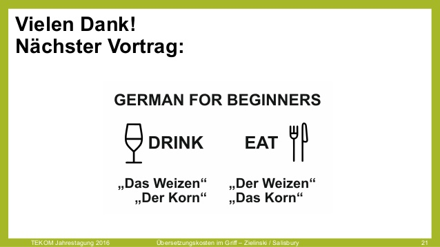
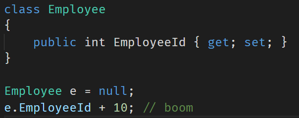
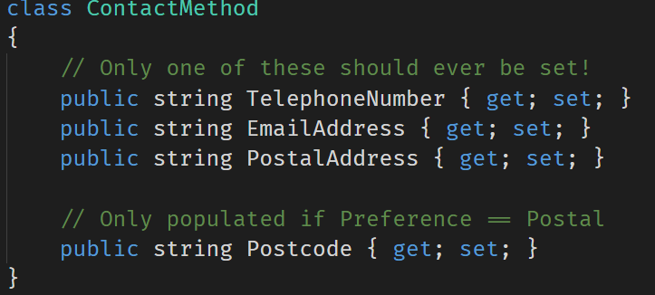
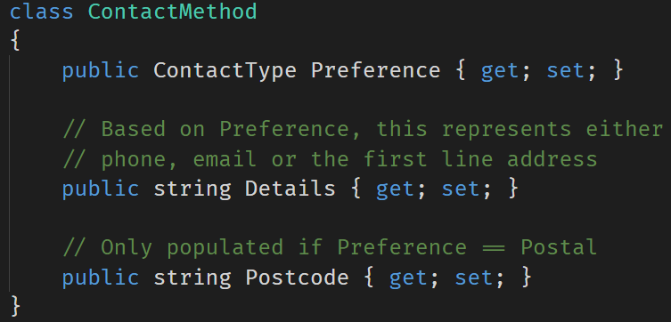
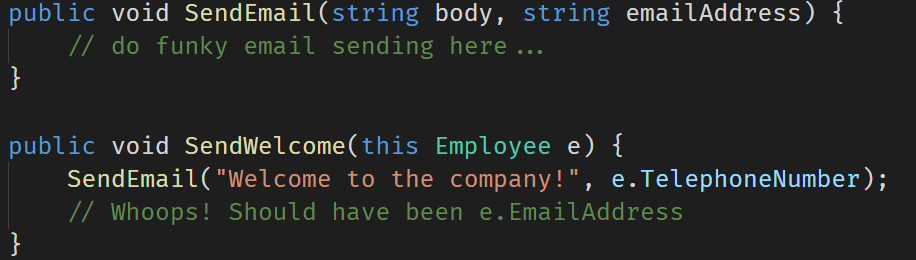
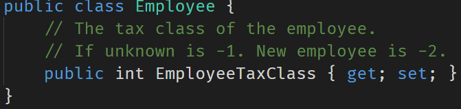

Full name: index.x
val int : value:'T -> int (requires member op_Explicit)
Full name: Microsoft.FSharp.Core.Operators.int
--------------------
type int = int32
Full name: Microsoft.FSharp.Core.int
--------------------
type int<'Measure> = int
Full name: Microsoft.FSharp.Core.int<_>
Full name: index.y
Full name: index.addFive
| Male
| Female
Full name: index.Gender
| English
| German
| Hebrew
Full name: index.Language
| Singular
| Plural
Full name: index.Plurality
Full name: index.speak
Full name: index.speak
| Sunny of temperature: int
| Wet of temperature: int * windSpeed: int
| Cold of temperature: int * snowFall: int
Full name: index.Weather
{ForecastDate: DateTime;
Prediction: Weather;}
Full name: index.Forecast
type DateTime =
struct
new : ticks:int64 -> DateTime + 10 overloads
member Add : value:TimeSpan -> DateTime
member AddDays : value:float -> DateTime
member AddHours : value:float -> DateTime
member AddMilliseconds : value:float -> DateTime
member AddMinutes : value:float -> DateTime
member AddMonths : months:int -> DateTime
member AddSeconds : value:float -> DateTime
member AddTicks : value:int64 -> DateTime
member AddYears : value:int -> DateTime
...
end
Full name: System.DateTime
--------------------
DateTime()
(+0 other overloads)
DateTime(ticks: int64) : unit
(+0 other overloads)
DateTime(ticks: int64, kind: DateTimeKind) : unit
(+0 other overloads)
DateTime(year: int, month: int, day: int) : unit
(+0 other overloads)
DateTime(year: int, month: int, day: int, calendar: Globalization.Calendar) : unit
(+0 other overloads)
DateTime(year: int, month: int, day: int, hour: int, minute: int, second: int) : unit
(+0 other overloads)
DateTime(year: int, month: int, day: int, hour: int, minute: int, second: int, kind: DateTimeKind) : unit
(+0 other overloads)
DateTime(year: int, month: int, day: int, hour: int, minute: int, second: int, calendar: Globalization.Calendar) : unit
(+0 other overloads)
DateTime(year: int, month: int, day: int, hour: int, minute: int, second: int, millisecond: int) : unit
(+0 other overloads)
DateTime(year: int, month: int, day: int, hour: int, minute: int, second: int, millisecond: int, kind: DateTimeKind) : unit
(+0 other overloads)
Full name: index.forecast
Full name: index.describe
{ForecastDate: DateTime;
Prediction: Weather option;}
Full name: index.OptionalForecast
Full name: Microsoft.FSharp.Core.option<_>
Full name: index.forecasts
Full name: index.tryDescribe
type MeasureAttribute =
inherit Attribute
new : unit -> MeasureAttribute
Full name: Microsoft.FSharp.Core.MeasureAttribute
--------------------
new : unit -> MeasureAttribute
type celcius
Full name: index.celcius
type cm
Full name: index.cm
type km
Full name: index.km
type hour
Full name: index.hour
| Sunny of temperature: int<celcius>
| Wet of temperature: int<celcius> * windSpeed: int<km/hour>
| Cold of temperature: int<celcius> * snowFall: int<cm/hour>
Full name: index.BetterWeather
{EmployeeId: int;}
Full name: index.Employee
Full name: index.employee
| Telephone of telephoneNumber: string
| Email of emailAddress: string
| Postal of firstLine: string * postCode: string
Full name: index.ContactType
val string : value:'T -> string
Full name: Microsoft.FSharp.Core.Operators.string
--------------------
type string = String
Full name: Microsoft.FSharp.Core.string
Full name: index.act
Full name: Microsoft.FSharp.Core.ExtraTopLevelOperators.sprintf
union case EmailAddress.EmailAddress: string -> EmailAddress
--------------------
type EmailAddress = | EmailAddress of string
Full name: index.EmailAddress
union case TelephoneNumber.TelephoneNumber: string -> TelephoneNumber
--------------------
type TelephoneNumber = | TelephoneNumber of string
Full name: index.TelephoneNumber
Full name: index.sendEmail
Full name: index.sendWelcome
Full name: index.email
{Market: string;
ProductName: string;
Origin: string;
Destination: string;
Rate: float;
MarketShare: int;
ShippedLastYear: float;}
Full name: index.RateLine
val float : value:'T -> float (requires member op_Explicit)
Full name: Microsoft.FSharp.Core.Operators.float
--------------------
type float = Double
Full name: Microsoft.FSharp.Core.float
--------------------
type float<'Measure> = float
Full name: Microsoft.FSharp.Core.float<_>
| Success of 'T
| Failure of error: string
Full name: index.Result<_>
union case Result.Failure: error: string -> Result<'T>
--------------------
active recognizer Failure: exn -> string option
Full name: Microsoft.FSharp.Core.Operators.( |Failure|_| )
Full name: index.Enricher
Full name: index.calculateRates
Trusting your Domain
with F#
About me
- Isaac Abraham
- Microsoft MVP
- Founder of CIT
- "F# MVP and Azure dude"

About you!
What am I going to talk about?
- The importance of types for domain modelling?
- Parallels: Spoken and Programming languages
- Real-world case study
- Demo
Why are static types important?
Communication
- To yourself
- To other developers
- To non-developers!
- To the compiler!
Be succinct
Lightweight syntax
Type Inference
Expressing intent
Coding Standard?
Unit Tests?
Comments?
TYPES!
Why Types?
- Types can't easily be ignored
- Types don't need to be maintained separately
- Types don't need unit tests
Static Types
Specify rich information about a domain
- Basic Types
- Generics
- Sum Types
- Nullability
- Units of Measure
- Dependent Types etc.
Is F# a real possibility?

It's only for maths and science!

Don't believe the myths
Spoken languages
"The Rabbit is Ready to Eat"


Languages are full of ambiguities!
Languages have different grammars
Just like programming languages
Less rules |
More rules |
|
|---|---|---|
Go |
C# |
Idris |
English |
German |
Hungarian |
Less power |
More powerful |
|
|---|---|---|
Go |
C# |
Idris |
English |
German |
Hungarian |
Learning a new language can be hard
- English has little / no notion of gender
- Little notion of common cases e.g. accusative, dativ etc.
- Other languages take these cases for granted
Example #2

What can we infer from this?


Take #1:
English
Male |
Female |
|
|---|---|---|
Male |
X |
X |
Female |
X |
X |
Singular |
Plural |
|
|---|---|---|
Singular |
X |
X |
Plural |
Summary
- English doesn't allow us to be precise about what we mean.
- 8 different combinations from a three word sentence
- Just 2 conjungations account for all 16 combinations
Is this a good thing?
Take #2:
Deutsch
Translate "I love you" to German!
I love you

Male |
Female |
|
|---|---|---|
Male |
X |
X |
Female |
X |
X |
Singular |
Plural |
|
|---|---|---|
Singular |
X |
|
Plural |
Summary
- German lets us encode more information than English
- No support for gender, but full control of plurality
- Only 4 possible ways to interpret ich liebe dich
- 4 conjungations account for all 16 combinations
- German also provides a third "dimension" for informal / formal
- German also has a third "neuter" gender
How would you feel?
-
No more die / das / den / dem
- Only der!
-
No more dich / dir / euch / Sie
- Only du!
German objects have different gender depending on the time!

Take #3:
Hebrew
Translate "I love you" to Hebrew!
I love you

Ani ohev otach
Male |
Female |
|
|---|---|---|
Male |
X |
|
Female |
Singular |
Plural |
|
|---|---|---|
Singular |
X |
|
Plural |
Object Gender
English |
German |
Hebrew |
|
|---|---|---|---|
M > F |
I love you |
Ich liebe dich |
Ani Ohev Otach |
M > M |
Ani Ohev Otcha |
Subject Gender
English |
German |
Hebrew |
|
|---|---|---|---|
M > F |
I love you |
Ich liebe dich |
Ani Ohev Otach |
F > F |
Ani Ohevet Otach |
Object Plurality
English |
German |
Hebrew |
|
|---|---|---|---|
M > F |
I love you |
Ich liebe dich |
Ani Ohev Otach |
M > MP |
Ich liebe euch |
Ani Ohev Otchem |
|
M > FP |
Ani Ohev Etchen |
Subject Plurality
English |
German |
Hebrew |
|
|---|---|---|---|
M > F |
I love you |
Ich liebe dich |
Ani Ohev Otach |
MP > F |
We love you |
Wir lieben dich |
Anachnu Ohavim Otach |
FP > F |
Anachnu Ohevot Otach |
Summary
- Hebrew allows us to specify exactly the case we required
- Only 1 way to say I love you for any given subject & object
- Need to learn 10 different words
- 16 conjungations account for all 16 combinations
- In Hebrew you can omit the subject word entirely
Is this a good thing?
Considering Programming languages
How can rich types help us?
Guiding the compiler
A compiler makes use of type information to help us
- Trap errors early
- Make illegal states unrepresentable
- Provide guidance where errors may occur
Type Inference
1: 2: |
|
Type Inference #2
1: 2: 3: 4: |
|
Type Inference #3
1: 2: 3: 4: 5: 6: 7: 8: 9: 10: 11: |
|
Compiler support
1: 2: 3: 4: 5: 6: 7: |
|
Sum Types
1: 2: 3: 4: 5: 6: 7: 8: 9: 10: 11: 12: 13: 14: |
|
Sum Types continued...
1: 2: 3: 4: 5: 6: |
|
Nullability
- Allows us to model the absence-of-a-value
- Rich support within F#
- In F#, values are non-nullable by default
1: 2: 3: 4: 5: 6: 7: 8: 9: |
|
F# forces us to handle missing values
1: 2: 3: 4: 5: 6: |
|
Units of Measure
1: 2: 3: 4: 5: 6: 7: 8: 9: |
|
Common anti-patterns
Implicitly null

1: 2: |
|
The Unrepresentable Value

The Reusable Field

1: 2: 3: 4: 5: 6: 7: 8: 9: 10: |
|
The Mistyped Field

1: 2: 3: 4: 5: 6: 7: 8: 9: 10: |
|
The Magic Number


Types are there to help!
Better types <> not real-world
Better types <> too hard
More confidence
Less tests
Less bugs
More happy
Case Study
Pricing Sheet Engine
- Large German cargo airline
- Runs across ~100 markets
-
Complex domain
- Routing logic
- Pricing models
- Ubiquitous language?
-
Lots of different data feeds
- Multiple formats
- "Nearly-compatible" data
Naturally evolving model
Started simple
- Records
- Primitive Types
- Scripts for exploration
Slowly added more types
- Records
- Discriminated Unions
- Active Patterns
- Single Case wrappers
- Units of Measure
1: 2: 3: 4: 5: 6: 7: 8: |
|
1: 2: 3: 4: 5: 6: 7: 8: |
|
Results
- No bugs in the wild
- Calculations matched exactly to previous manual work
Working with the business
- Lower barrier to entry for collaboration
- Focus on solving business problems
- Able to walk through code with domain experts
- Identified "gaps" in business process
Great fit for functional paradigm
1: 2: 3: 4: 5: 6: 7: 8: |
|
Demo
Thank you!